Tools: Figma, InVision
My role
Working together with developer James Kim on this project, I acted as a UI/UX designer. I focused on the design, animations, overall flow, and prototype of his website.
Context and goal
James Kim is a third year engineering student at the University of Waterloo. He has an existing website that he developed during his first year. Having improved upon his front-end development skills since then, he now wants to develop a more complex website that properly reflects upon his current abilities.
In order to solve this problem, I decided upon designing a website with a strong focus on animations. This would require the use of JavaScript, which satisifies James' need of displaying his front-end development skills.
The process
Going with a mobile-first approach, I made a simple layout of the landing page that included a brief introduction to James. The navigation bar would remain fixed to the top of the screen, so users would never have to needlessly scroll up or down to find what they want. This was an important aspect, because the primary users of the website are recruiters who want to find relevant information quickly and effortlessly.
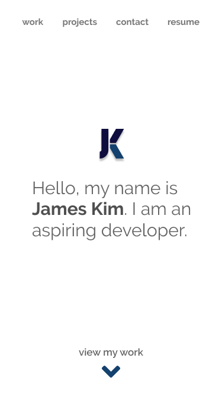
As for the 'work' section, each experience was listed in reverse chronological order. The logo of each of each company was used as the titles for easy recognition. A darker change in background colour and highlighted 'work' in the navigation was also used to subtly let the user know that they were browsing a different section.
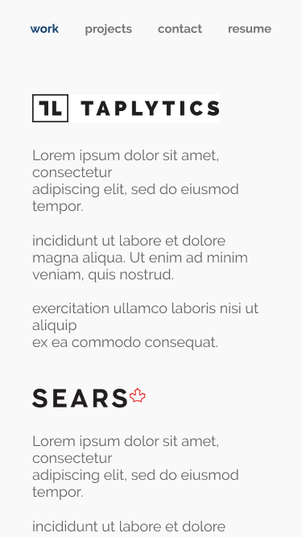
At the time, James only had one completed project, so the 'projects' section followed a similar design as the 'work' section to account for scalability. Additional projects would simply be added below Avalon Mobile in the same format.
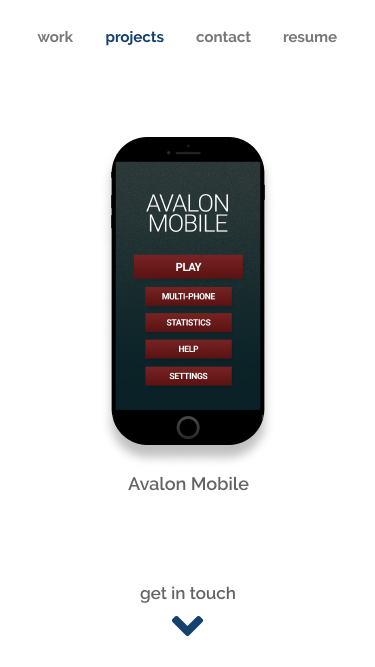
Designing for desktop
This is where the animation-oriented design came in. With a lot more white space available, I decided on creating an avatar of James as a sort of guide for the desktop user (the text would change depending on what the user clicked/hovered). This also goes back to the primary user of the recruiter; seeing an avatar would create a more unique and personal experience, making James stand out from other applicants. Additionally, James' avatar would pop up and down (like the pokemon Diglett!) when users moved from one section to another, to make the website more interactive and animated.
 For the 'work' section in desktop, I saw an opportunity to incorporate further animations. Rather than listing out the experiences all at once like in mobile, each experience would display further information once clicked on.
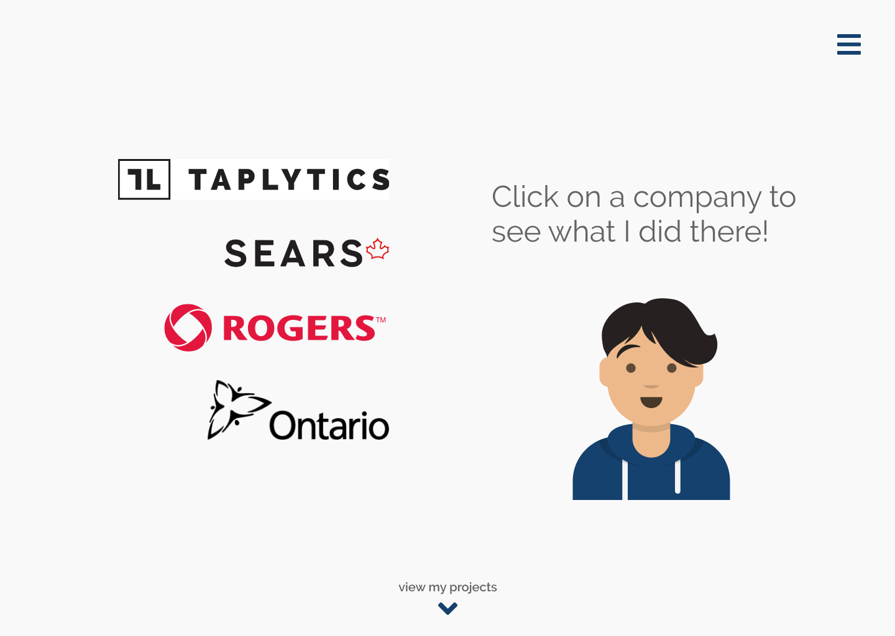
When a user clicked on a company (ex. Taplytics), the above screen would transform to the below screen. The company logos would slide off screen to the left and slide back in horizontally from the right at a higher location. James' experience with the selected company would be shown under the horizontal display of the company logos.
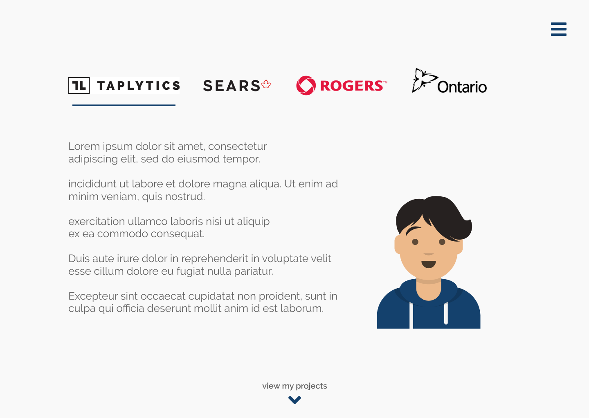
Also, once the user left the landing page, the navigation bar would transform into a hamburger menu to provide easy access to the rest of the website in a non-intrusive way.
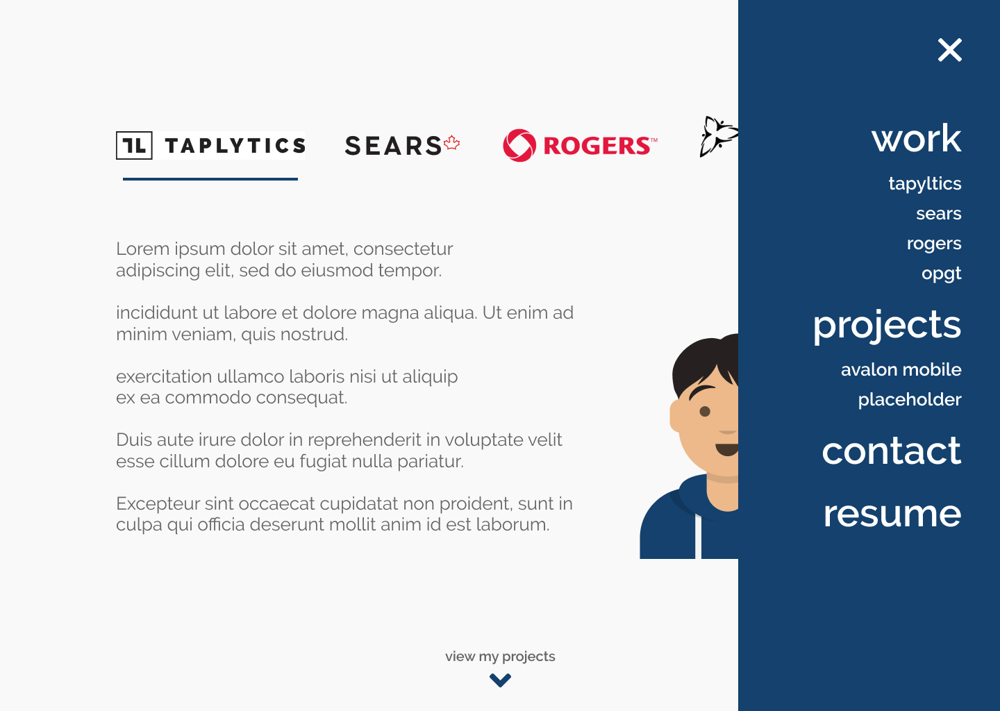
For the desktop version of the 'projects' section, complicated animations were unnecssary. This is because once a project was clicked, the user would be directed to the codebase on James' GitHub. A simple hover animation would suffice for the projects.
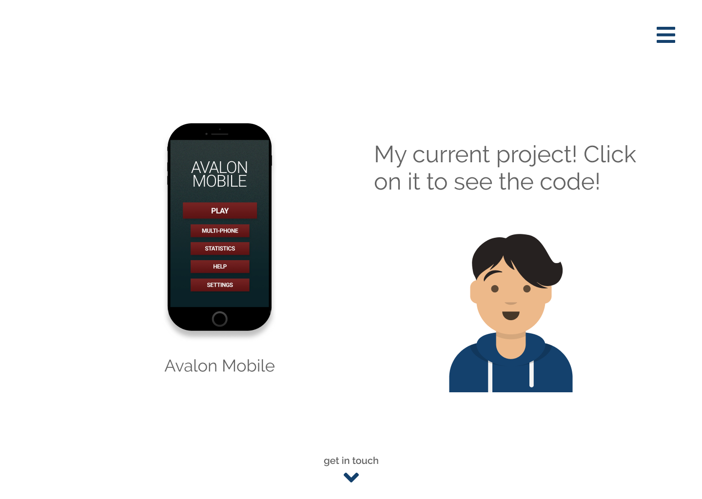
For the 'work' section in desktop, I saw an opportunity to incorporate further animations. Rather than listing out the experiences all at once like in mobile, each experience would display further information once clicked on.
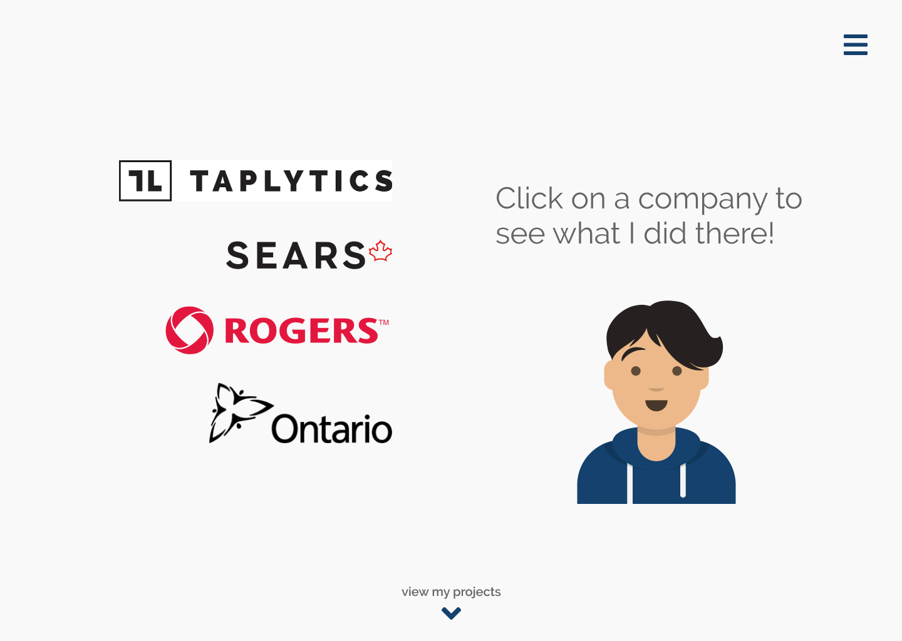
When a user clicked on a company (ex. Taplytics), the above screen would transform to the below screen. The company logos would slide off screen to the left and slide back in horizontally from the right at a higher location. James' experience with the selected company would be shown under the horizontal display of the company logos.
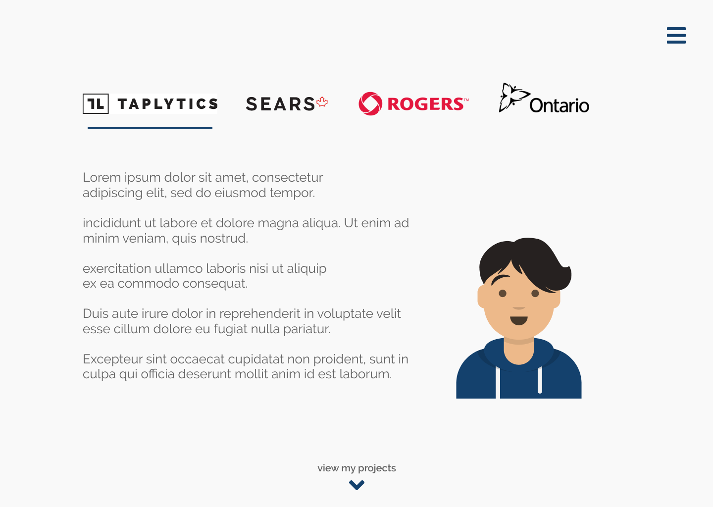
Also, once the user left the landing page, the navigation bar would transform into a hamburger menu to provide easy access to the rest of the website in a non-intrusive way.
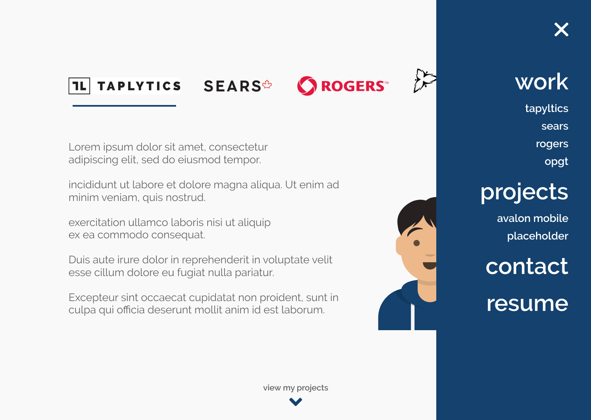
For the desktop version of the 'projects' section, complicated animations were unnecssary. This is because once a project was clicked, the user would be directed to the codebase on James' GitHub. A simple hover animation would suffice for the projects.
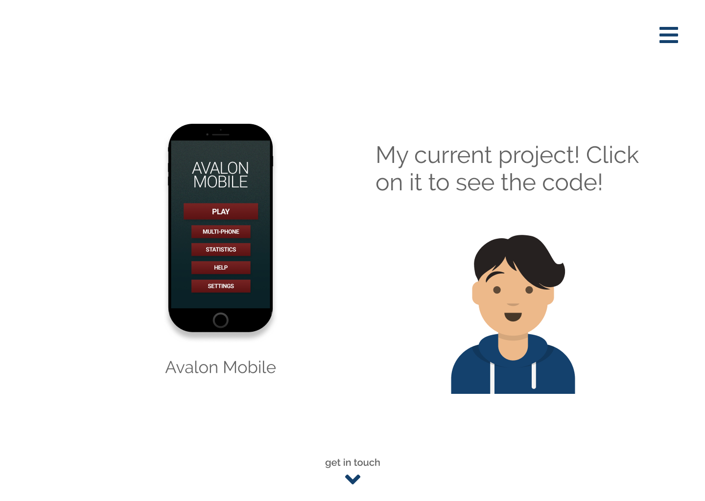
For the 'work' section in desktop, I saw an opportunity to incorporate further animations. Rather than listing out the experiences all at once like in mobile, each experience would display further information once clicked on.
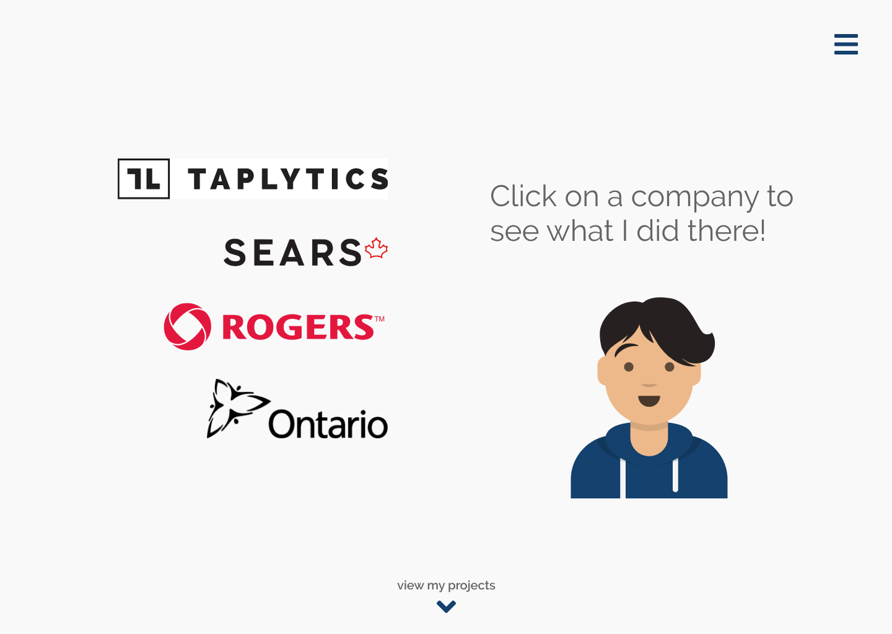
When a user clicked on a company (ex. Taplytics), the above screen would transform to the below screen. The company logos would slide off screen to the left and slide back in horizontally from the right at a higher location. James' experience with the selected company would be shown under the horizontal display of the company logos.
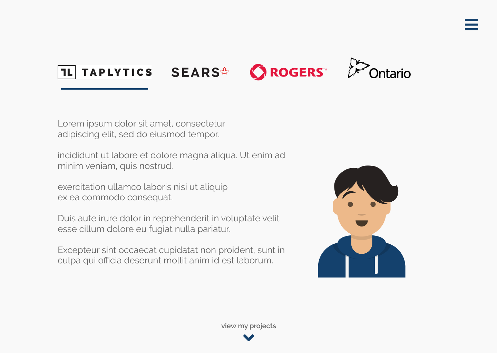
Also, once the user left the landing page, the navigation bar would transform into a hamburger menu to provide easy access to the rest of the website in a non-intrusive way.
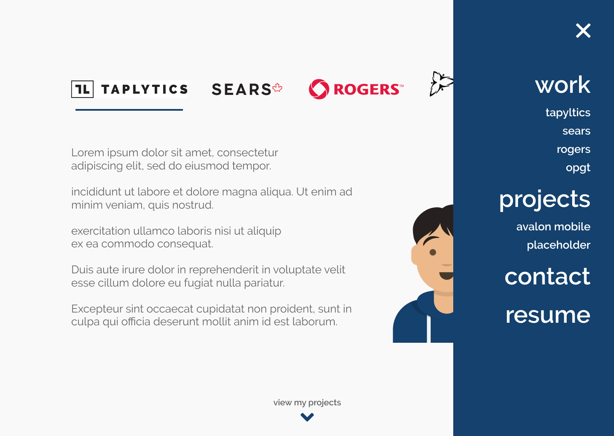
For the desktop version of the 'projects' section, complicated animations were unnecssary. This is because once a project was clicked, the user would be directed to the codebase on James' GitHub. A simple hover animation would suffice for the projects.
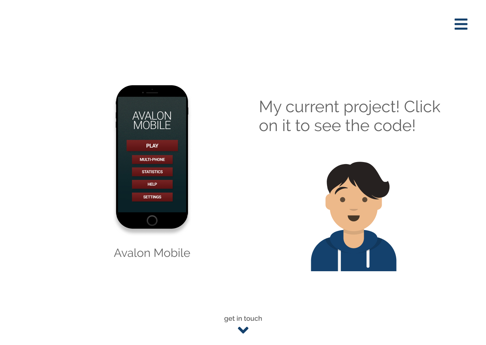
Future plans
James' website is currently under development. Once completed, analytics should be added to find out what works and doesn't work. In terms of the design, responsiveness on all platforms (ex. tablet) should be added. Lastly, accessibility should also be explored. In the case that a user's computer is not compatible with the JavaScript animations, alternative solutions should be formed.